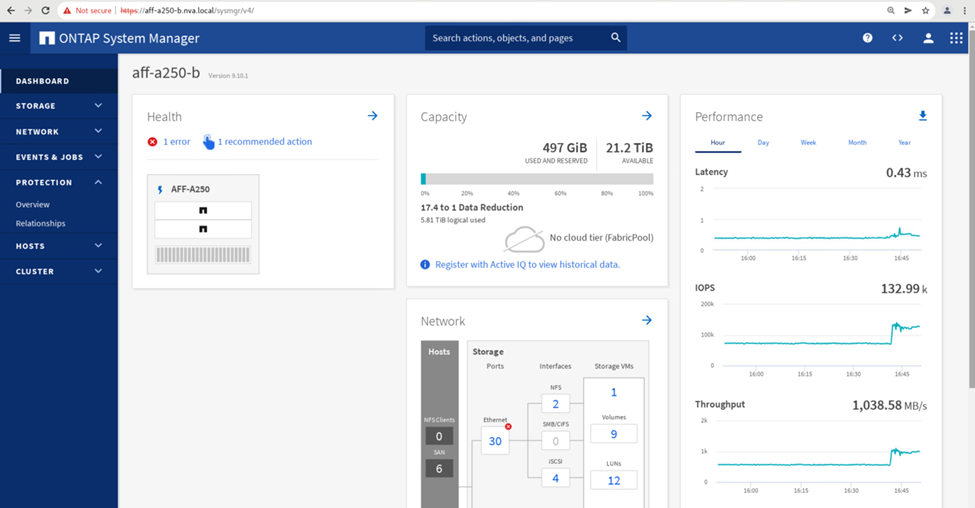
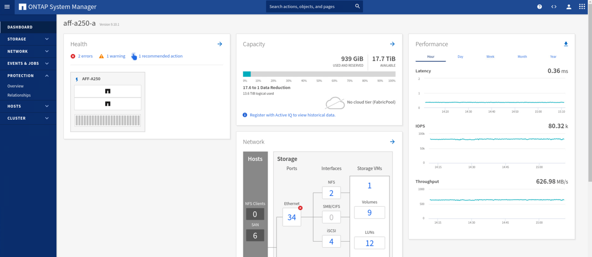
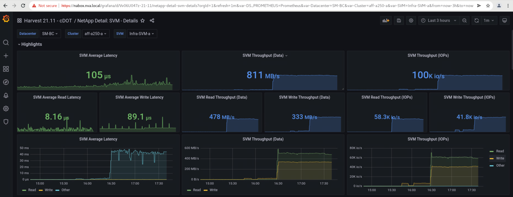
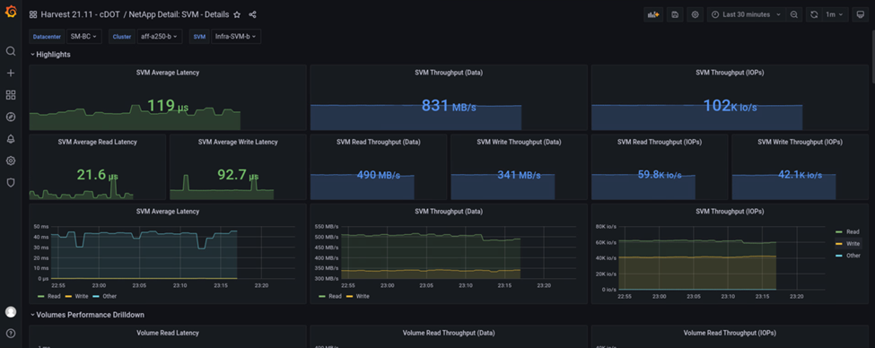

Definizione FlexPod
Definizione FlexPod
Convalida della soluzione - scenari validati
 Suggerisci modifiche
Suggerisci modifiche
La soluzione FlexPod Datacenter SM-BC protegge i servizi dati per una vasta gamma di scenari a singolo punto di errore e in caso di disastro del sito. Il design ridondante implementato in ogni sito offre alta disponibilità e l'implementazione di SM-BC con replica sincrona dei dati tra i siti protegge i servizi dati da un disastro a livello di sito. La soluzione implementata è convalidata per le funzioni della soluzione desiderate e per i vari scenari di guasto per i quali la soluzione è progettata per proteggere.
Convalida delle funzioni della soluzione
Per verificare le funzioni della soluzione e simulare scenari di guasto parziale e completo del sito vengono utilizzati diversi casi di test. Per ridurre al minimo la duplicazione con i test già eseguiti nelle soluzioni FlexPod Datacenter esistenti nell'ambito del programma Cisco Validated Design, l'attenzione di questo report è incentrata sugli aspetti della soluzione correlati a SM-BC. Sono incluse alcune convalide FlexPod generali per i professionisti che devono eseguire le convalide di implementazione.
Per la convalida della soluzione, è stata creata una macchina virtuale Windows 10 per host ESXi su tutti gli host ESXi di entrambi i siti. Lo strumento IOMeter è stato installato e utilizzato per generare i/o su due dischi di dati virtuali mappati dagli archivi dati iSCSI locali condivisi. I parametri del carico di lavoro IOMeter configurati erano 8 KB di i/o, 75% di lettura e 50% di random, con 8 comandi i/o in sospeso per ciascun disco dati. Per la maggior parte degli scenari di test eseguiti, la continuazione dell'i/o di IOMeter indica che lo scenario non ha causato un'interruzione del servizio dati.
Poiché SM-BC è un fattore critico per le applicazioni di business come i server di database, L'istanza di Microsoft SQL Server 2019 su una macchina virtuale Windows Server 2022 è stata inclusa anche come parte del test per confermare che l'applicazione continua a funzionare quando lo storage nel sito locale non è disponibile e il servizio dati viene ripristinato nello storage del sito remoto senza applicazione interruzioni.
Test di boot SAN iSCSI host ESXi
Gli host ESXi della soluzione sono configurati per l'avvio da SAN iSCSI. L'utilizzo dell'avvio SAN semplifica la gestione del server quando si sostituisce un server, in quanto il profilo di servizio del server può essere associato a un nuovo server per l'avvio senza apportare ulteriori modifiche alla configurazione.
Oltre all'avvio di un host ESXi situato in un sito dalla propria LUN di avvio iSCSI locale, sono stati eseguiti test anche per avviare l'host ESXi quando il controller dello storage locale si trova in uno stato di Takeover o quando il cluster di storage locale non è completamente disponibile. Questi scenari di convalida garantiscono che gli host ESXi siano configurati correttamente in base alla progettazione e possano avviarsi durante una manutenzione dello storage o uno scenario di emergenza per il disaster recovery per garantire la business continuity.
Prima di configurare la relazione del gruppo di coerenza SM-BC, un LUN iSCSI ospitato da una coppia ha di controller di storage dispone di quattro percorsi, due attraverso ogni fabric iSCSI, in base all'implementazione delle Best practice. Un host può accedere al LUN attraverso le due VLAN/fabric iSCSI al controller host LUN e attraverso il partner ad alta disponibilità del controller.
Dopo aver configurato la relazione del gruppo di coerenza SM-BC e aver mappato correttamente i LUN mirrorati agli iniziatori, il numero di percorsi per il LUN raddoppia. Per questa implementazione, si passa da due percorsi attivi/ottimizzati e due percorsi attivi/non ottimizzati a due percorsi attivi/ottimizzati e sei percorsi attivi/non ottimizzati.
La figura seguente illustra i percorsi che un host ESXi può utilizzare per accedere a un LUN, ad esempio LUN 0. Poiché il LUN è collegato al sito Un controller 01, solo i due percorsi che accedono direttamente al LUN tramite quel controller sono attivi/ottimizzati e tutti i sei percorsi rimanenti sono attivi/non ottimizzati.

La seguente schermata delle informazioni sul percorso del dispositivo di storage mostra come l'host ESXi vede i due tipi di percorsi del dispositivo. I due percorsi attivi/ottimizzati sono mostrati come aventi active (I/O) stato del percorso, mentre i sei percorsi attivi/non ottimizzati sono mostrati solo come active. Si noti inoltre che la colonna Target mostra le due destinazioni iSCSI e i rispettivi indirizzi IP LIF iSCSI per raggiungere le destinazioni.

Quando uno dei controller di storage non è più disponibile per la manutenzione o l'aggiornamento, i due percorsi che raggiungono il controller down non sono più disponibili e vengono visualizzati con uno stato di percorso di dead invece.
Se si verifica un failover del gruppo di coerenza sul cluster di storage primario, a causa di test di failover manuali o failover automatico di emergenza, il cluster di storage secondario continua a fornire servizi dati per le LUN nel gruppo di coerenza SM-BC. Poiché le identità del LUN vengono preservate e i dati vengono replicati in modo sincrono, tutte le LUN di avvio degli host ESXi protette da gruppi di coerenza SM-BC rimangono disponibili dal cluster di storage remoto.
Test di affinità di VMware vMotion e VM/host
Sebbene una soluzione generica FlexPod per data center supporti multiprotocollo come FC, iSCSI, NVMe e NFS, la funzionalità della soluzione FlexPod SM-BC supporta i protocolli FC e iSCSI SAN generalmente utilizzati per le soluzioni business-critical. Questa convalida utilizza solo datastore basati su protocollo iSCSI e boot SAN iSCSI.
Per consentire alle macchine virtuali di utilizzare i servizi di storage da un sito SM-BC, gli archivi dati iSCSI di entrambi i siti devono essere montati da tutti gli host nel cluster per consentire la migrazione delle macchine virtuali tra i due siti e per gli scenari di disaster failover.
Per le applicazioni eseguite sull'infrastruttura virtuale che non richiedono la protezione del gruppo di coerenza SM-BC tra i siti, è possibile utilizzare anche il protocollo NFS e gli archivi dati NFS. In tal caso, è necessario prestare attenzione quando si allocano storage per le macchine virtuali in modo che le applicazioni business-critical utilizzino correttamente gli archivi dati SAN protetti dal gruppo di coerenza SM-BC per garantire la continuità del business.
La seguente schermata mostra che gli host sono configurati per montare datastore iSCSI da entrambi i siti.

È possibile eseguire la migrazione dei dischi delle macchine virtuali tra gli archivi dati iSCSI disponibili da entrambi i siti, come illustrato nella figura seguente. Per considerazioni sulle performance, è ottimale che le macchine virtuali utilizzino lo storage del cluster di storage locale per ridurre le latenze di i/o dei dischi. Ciò è particolarmente vero quando i due siti si trovano ad alcune distanze a causa della latenza fisica di andata e ritorno di circa 1 ms per 100 km di distanza.

I test di vMotion delle macchine virtuali su un host diverso nello stesso sito e tra diversi siti sono stati eseguiti e sono stati eseguiti con successo. Dopo la migrazione manuale di una macchina virtuale tra i siti, la regola di affinità VM/host attiva e trasferisce nuovamente la macchina virtuale nel gruppo in cui appartiene in condizioni normali.
Failover dello storage pianificato
Le operazioni pianificate di failover dello storage devono essere eseguite sulla soluzione dopo la configurazione iniziale per determinare se la soluzione funziona correttamente dopo il failover dello storage. Il test può aiutare a identificare eventuali problemi di connettività o configurazione che potrebbero causare interruzioni i/O. Il test e la risoluzione regolari di qualsiasi problema di connettività o configurazione consentono di fornire servizi dati ininterrotti in caso di disastro reale del sito. Il failover dello storage pianificato può essere utilizzato anche prima di un'attività di manutenzione dello storage pianificata, in modo che i servizi dati possano essere serviti dal sito non interessato.
Per avviare un failover manuale dei servizi dati di storage del sito A verso il sito B, è possibile utilizzare il System Manager del sito B ONTAP per eseguire l'azione.
-
Accedere alla schermata protezione > Relazioni per verificare che lo stato della relazione del gruppo di coerenza sia
In Sync. Se si trova ancora inSynchronizingstate (stato), attendere che lo stato diventiIn Syncprima di eseguire un failover. -
Espandere i punti accanto al nome di origine e fare clic su failover.

-
Confermare il failover per l'avvio dell'azione.

Subito dopo l'avvio del failover dei due gruppi di coerenza, cg_esxi_a e. cg_infra_datastore_a, Nella GUI di System Manager del sito B, l'i/o del sito A che serve questi due gruppi di coerenza si è spostato sul sito B. Di conseguenza, l'i/o presso il sito A si è ridotto in modo significativo, come mostrato nel riquadro delle performance di System Manager del sito.

D'altro canto, il pannello Performance del dashboard System Manager del sito B mostra un aumento significativo degli IOPS, dovuto alla fornitura di ulteriori i/o spostati dal sito A a circa 130.000 IOPS, E ha raggiunto un throughput di circa 1 GB/s mantenendo una latenza i/o inferiore a 1 millisecondo.

Con la migrazione trasparente dell'i/o dal sito A al sito B, i controller di storage del sito A possono ora essere messi fuori servizio per la manutenzione pianificata. Una volta completato il lavoro di manutenzione o il test e quando il sito Esegue il backup E il funzionamento Di Un cluster di storage, controllare e attendere che lo stato di protezione del gruppo di coerenza venga nuovamente impostato su In sync Prima di eseguire un failover per restituire l'i/o di failover dal sito B al sito A. Tenere presente che quanto più tempo un sito viene utilizzato per la manutenzione o il test, tanto più tempo occorre prima che i dati vengano sincronizzati e il gruppo di coerenza venga restituito a In sync stato.

Failover dello storage non pianificato
Un failover dello storage non pianificato può verificarsi quando si verifica un disastro reale o durante una simulazione di disastro. Ad esempio, vedere la figura seguente in cui il sistema di storage del sito A subisce un'interruzione dell'alimentazione, viene attivato un failover dello storage non pianificato e i servizi dati per le LUN del sito A, protette dalle relazioni SM-BC, continuano dal sito B.

Per simulare un disastro dello storage nel sito A, è possibile spegnere entrambi i controller dello storage nel sito A spegnendo fisicamente l'interruttore di alimentazione per interrompere l'alimentazione dei controller. oppure utilizzando il comando di gestione dell'alimentazione del sistema dei processori del servizio del controller di storage per spegnere i controller.
Quando il cluster di storage nel sito A viene interrotto, si verifica un arresto improvviso dei servizi dati forniti dal sito Di Un cluster di storage. Quindi, il mediatore ONTAP, che monitora la soluzione SM-BC da un terzo sito, rileva la condizione di guasto dello storage del sito A e consente alla soluzione SM-BC di eseguire un failover automatizzato non pianificato. Ciò consente ai controller di storage del sito B di continuare i servizi dati per le LUN configurate nelle relazioni del gruppo di coerenza SM-BC con il sito A.
Dal punto di vista dell'applicazione, i servizi dati si fermano brevemente mentre il sistema operativo controlla lo stato del percorso per i LUN e quindi riprende l'i/o sui percorsi disponibili per i controller di storage del sito B sopravvissuti.
Durante il test di convalida, lo strumento IOMeter sulle macchine virtuali di entrambi i siti genera i/o negli archivi dati locali. Una volta spento Il sito, Un cluster, i/o si è messo in pausa per un breve periodo e poi ripreso. Vedere le due figure seguenti per le dashboard del cluster di storage rispettivamente presso il sito A e il sito B prima del disastro, che mostrano circa 80.000 IOPS e un throughput di 600 MB/s in ogni sito.


Dopo aver spento i controller di storage nel sito A, possiamo validare visivamente che l'i/o del controller di storage del sito B è aumentato drasticamente per fornire servizi dati aggiuntivi per conto del sito A (vedere la figura seguente). Inoltre, la GUI delle VM IOMeter ha dimostrato che l'i/o è continuato nonostante l'interruzione del cluster di storage del sito A. Se sono presenti archivi dati aggiuntivi supportati da LUN non protetti da relazioni SM-BC, tali archivi dati non saranno più accessibili in caso di disastro dello storage. Pertanto, è importante valutare le esigenze aziendali dei vari dati applicativi e inserirli correttamente in datastore protetti dalle relazioni SM-BC per garantire la continuità del business.

Mentre il sito Di Un cluster è inattivo, le relazioni dei gruppi coerenti mostrano Out of sync come mostrato nella figura seguente. Una volta riacceso l'alimentazione per i controller di storage nel sito A, il cluster di storage si avvia e la sincronizzazione dei dati tra il sito A e il sito B.

Prima di restituire i servizi dati dal sito B al sito A, è necessario controllare System Manager del sito A e assicurarsi che le relazioni SM-BC vengano ripristinati e che lo stato sia nuovamente sincronizzato. Dopo aver confermato che i gruppi di coerenza sono sincronizzati, è possibile avviare un'operazione di failover manuale per restituire i servizi dati nelle relazioni del gruppo di coerenza al sito A.

Manutenzione completa del sito o guasto del sito
Un sito potrebbe richiedere la manutenzione del sito, subire un'interruzione dell'alimentazione o essere colpito da un disastro naturale, ad esempio un uragano o un terremoto. Pertanto, è fondamentale che tu eserciti scenari di guasto del sito pianificati e non pianificati per garantire che la tua soluzione FlexPod SM-BC sia configurata correttamente per sopravvivere a tali guasti per tutte le applicazioni business-critical e i servizi dati. Sono stati validati i seguenti scenari correlati al sito.
-
Scenario di manutenzione pianificata del sito mediante la migrazione di macchine virtuali e servizi dati critici nell'altro sito
-
Scenario di disservizio del sito non pianificato spegnendo server e controller storage per la simulazione di disastro
Per preparare un sito per la manutenzione pianificata del sito, è necessaria una combinazione di migrazione delle macchine virtuali interessate fuori sede con vMotion e un failover manuale delle relazioni del gruppo di coerenza SM-BC per migrare le macchine virtuali e i servizi dati critici nel sito alternativo. Il test è stato eseguito in due ordini diversi: VMotion prima seguito da SM-BC failover e SM-BC failover prima seguito da vMotion, per confermare che le macchine virtuali continuano a funzionare e i servizi dati non vengono interrotti.
Prima di eseguire la migrazione pianificata, aggiornare la regola di affinità VM/host in modo che le macchine virtuali attualmente in esecuzione sul sito vengano migrate automaticamente fuori dal sito sottoposto a manutenzione. La seguente schermata mostra un esempio di modifica della regola di affinità VM/host del sito A per la migrazione automatica delle macchine virtuali dal sito A al sito B. Invece di specificare che le macchine virtuali devono essere eseguite sul sito B, è possibile anche scegliere di disattivare temporaneamente la regola di affinità in modo che le macchine virtuali possano essere migrate manualmente.

Una volta migrate le macchine virtuali e i servizi storage, è possibile spegnere server, controller storage, shelf di dischi e switch ed eseguire le attività di manutenzione del sito necessarie. Una volta completata la manutenzione del sito e riattivata l'istanza di FlexPod, è possibile modificare l'affinità del gruppo di host per il ritorno delle macchine virtuali al sito originale. In seguito, modificare nuovamente la regola di affinità del sito VM/host "must run on hosts in group" (deve essere eseguita su host in gruppo) in modo che le macchine virtuali possano essere eseguite sugli host dell'altro sito in caso di disastro. Per il test di convalida, tutte le macchine virtuali sono state migrate correttamente nell'altro sito e i servizi dati sono continuati senza problemi dopo l'esecuzione di un failover per le relazioni SM-BC.
Per la simulazione di disastro del sito non pianificata, i server e i controller dello storage sono stati spenti per simulare un disastro del sito. La funzionalità VMware ha rileva le macchine virtuali in downtime e le riavvia sul sito esistente. Inoltre, il mediatore ONTAP in esecuzione in un terzo sito rileva il guasto del sito e il sito sopravvissuto avvia un failover e inizia a fornire servizi dati per il sito inattivo come previsto.
La seguente schermata mostra che la CLI del processore di servizio dei controller di storge è stata utilizzata per spegnere il sito Di Un cluster in modo brusco per simulare un disastro dello storage nel sito.

Le dashboard delle macchine virtuali dello storage dei cluster acquisite dallo strumento di raccolta dati NetApp Harvest e visualizzate nella dashboard Grafana nello strumento di monitoraggio NAbox sono illustrate nelle due schermate seguenti. Come si può vedere sul lato destro dei grafici IOPS e throughput, il cluster del sito B rileva il carico di lavoro dello storage del cluster A subito dopo il downdown del cluster del sito A.


Microsoft SQL Server
Microsoft SQL Server è una piattaforma di database ampiamente adottata e implementata per L'IT aziendale. Microsoft SQL Server 2019 offre numerose nuove funzionalità e miglioramenti ai motori di analisi e relazionali. Supporta i carichi di lavoro con applicazioni in esecuzione on-premise, nel cloud e in modalità ibrida utilizzando una combinazione di questi due. Inoltre, può essere implementato su più piattaforme, tra cui Windows, Linux e container.
Come parte della convalida dei carichi di lavoro business-critical per la soluzione FlexPod SM-BC, Microsoft SQL Server 2019 installato su una macchina virtuale Windows Server 2022 è incluso insieme alle macchine virtuali IOMeter per il test di failover dello storage pianificato e non pianificato SM-BC. Sulla macchina virtuale Windows Server 2022, SQL Server Management Studio viene installato per gestire SQL Server. Per i test, il tool di database HammerDB viene utilizzato per generare transazioni di database.
Il tool di test del database HammerDB è stato configurato per il test con il carico di lavoro Microsoft SQL Server TPROC-C. Per le configurazioni di creazione dello schema, le opzioni sono state aggiornate per utilizzare 100 warehouse con 10 utenti virtuali, come mostrato nella seguente schermata.

Dopo l'aggiornamento delle opzioni di creazione dello schema, è stato avviato il processo di creazione dello schema. Pochi minuti dopo, è stato introdotto un errore simulato del cluster di storage del sito B non pianificato spegnendo entrambi i nodi del cluster di storage AFF A250 a due nodi circa contemporaneamente utilizzando i comandi CLI del processore di sistema.
Dopo una breve pausa delle transazioni del database, è stato attivato il failover automatico per la risoluzione dei problemi e le transazioni sono state riavviate. La seguente schermata mostra la schermata di HammerDB Transaction Counter. Poiché il database per Microsoft SQL Server risiede normalmente nel cluster di storage del sito B, la transazione si è interrotta brevemente quando lo storage del sito B è andato in pausa e poi ripresa dopo il failover automatico.

Le metriche del cluster di storge sono state acquisite utilizzando il tool NAbox con il tool di monitoraggio NetApp Harvest installato. I risultati vengono visualizzati nei dashboard Grafana predefiniti per la macchina virtuale di storage e altri oggetti di storage. La dashboard fornisce metrici per latenza, throughput, IOPS e dettagli aggiuntivi con statistiche di lettura e scrittura separate per il sito B e il sito A.
Questa schermata mostra la dashboard delle performance NAbox Grafana per il cluster di storage del sito B.

Gli IOPS per il cluster di storage del sito B erano circa 100.000 IOPS prima dell'introduzione del disastro. Quindi, le metriche delle performance hanno mostrato un netto calo fino a zero sul lato destro dei grafici a causa del disastro. Poiché il cluster di storage del sito B non era attivo, non era possibile raccogliere nulla dal cluster del sito B dopo l'introduzione del disastro.
D'altra parte, gli IOPS per il cluster di storage del sito A hanno raccolto i carichi di lavoro aggiuntivi dal sito B dopo il failover automatizzato. Il carico di lavoro aggiuntivo può essere facilmente visualizzato sul lato destro dei grafici IOPS e throughput nella seguente schermata, che mostra la dashboard delle performance NAbox Grafana per il cluster di storage del sito A.

Lo scenario di disaster test dello storage sopra riportato ha confermato che il carico di lavoro di Microsoft SQL Server può sopravvivere a un'interruzione completa del cluster di storage nel sito B in cui risiede il database. L'applicazione utilizzava in modo trasparente i servizi dati forniti dal sito Di Un cluster di storage dopo il rilevamento del disastro e il failover.
A livello di elaborazione, quando le macchine virtuali in esecuzione in un determinato sito subiscono un guasto all'host, le macchine virtuali sono progettate per essere riavviate automaticamente dalla funzionalità VMware ha. Per un'interruzione completa del calcolo del sito, le regole di affinità VM/host consentono il riavvio delle macchine virtuali nel sito sopravvissuto. Tuttavia, affinché un'applicazione business-critical fornisca servizi ininterrotti, è necessario un clustering basato su applicazioni come Microsoft failover Cluster o Kubernetes container-based application architecture per evitare il downtime dell'applicazione. Consultare il documento pertinente per l'implementazione del clustering basato sulle applicazioni, che esula dall'ambito di questo report tecnico.